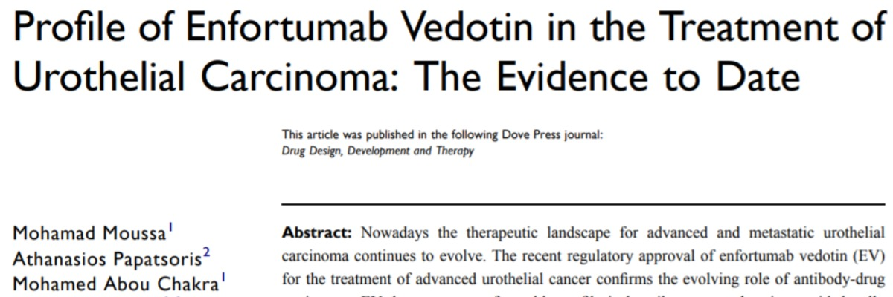
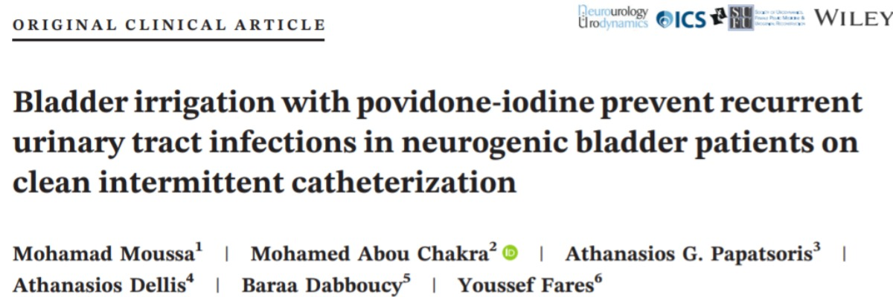
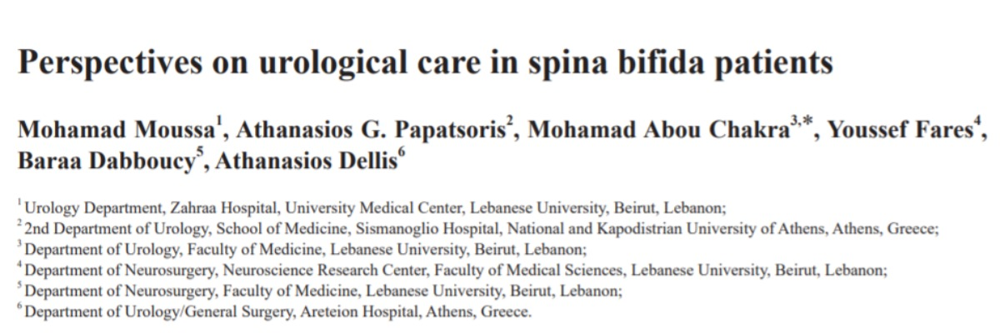

February 2021Drug Design, Development and Therapy 2021(15):453—462
Nowadays the therapeutic landscape for advanced and metastatic urothelial carcinoma continues to evolve. The recent regulatory approval of enfortumab vedotin (EV) for the treatment of advanced urothelial cancer confirms the evolving role of antibody-drug conjugates. EV demonstrates a favorable profile in heavily pretreated patients with locally advanced or metastatic urothelial carcinoma. Early survival reports demonstrate a significant antitumor effectiveness along with a rather acceptable safety profile in a difficult-to-treat population.

January 2021, Neurourology and Urodynamics
Aims To determine if daily povidone‐iodine (PI) bladder irrigation in neurogenic lower urinary tract dysfunction (NLUTD) patients doing clean intermittent catheterization (CIC) can reduce the rate of symptomatic urinary tract infections (UTIs), emergency department (ED) visit for UTIs, and hospitalization for UTIs. Methods We prospectively reviewed the records of patients with NLUTD on CIC who had recurrent symptomatic UTIs and who were placed on daily intravesical instillations of PI. This trial was conducted from January 2014 to January 2020 on 119 patients. Results After using...

January 2021, Intractable & Rare Diseases Research
Spina bifida (SB) is a neurogenetic disorder with a complex etiology that involves genetic and environmental factors. SB can occur in two major forms of open SB or SB aperta and closed SB or SB occulta. Myelomeningocele (MMC), the most common neural tube defects (NTDs), occurs in approximately 1 in 1,000 births. Considering non-genetic factors, diminished folate status is the best-known factor influencing NTD risk. The methylenetetrahydrofolate reductase (MTHFR) gene has been implicated as a risk factor for NTDs. The primary disorder in the pathogenesis of MMC is failed neural tube closure in the embryonic spinal region. The clinical manifestation of SB depends on clinical type and severity. SB can be detected...